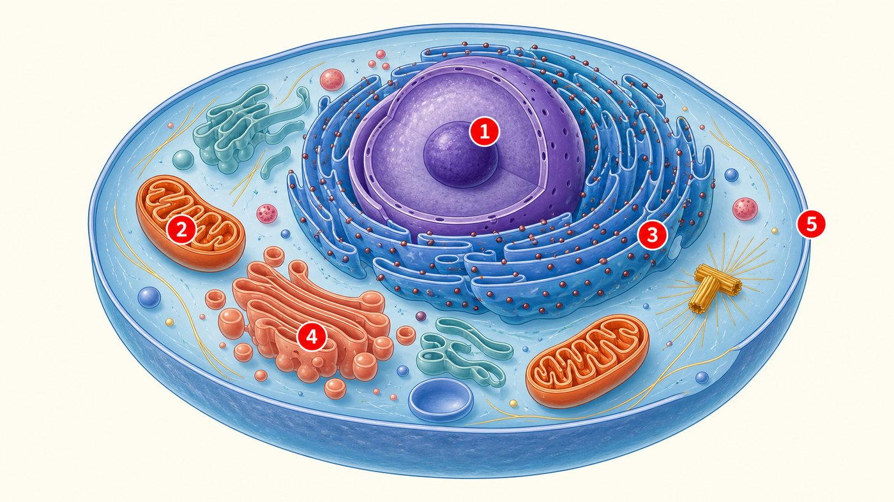
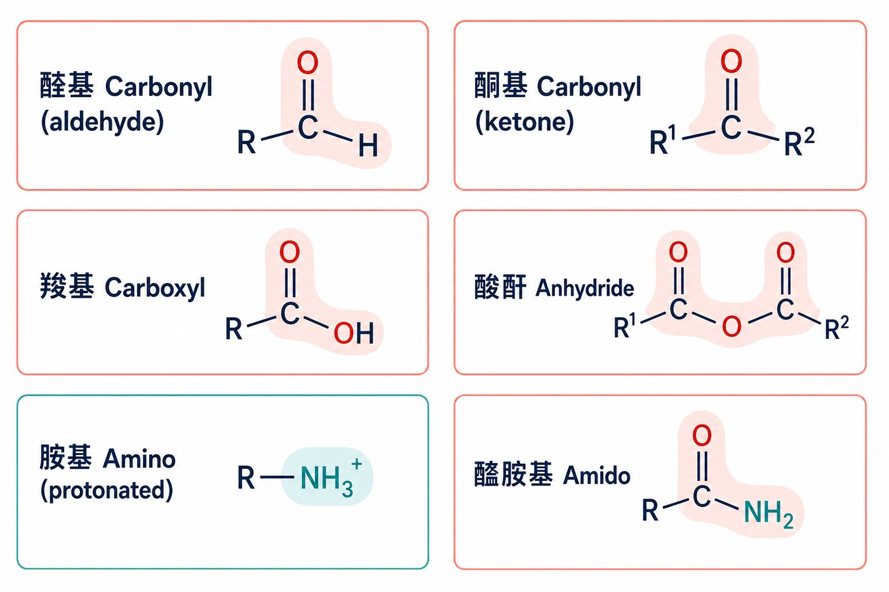

第 1 週
細胞與生物分子
Nhập môn Hóa sinh: tế bào và phân tử sinh học
Ba mục tiêu hôm nay
Nói tên 4 nhóm phân tử sinh học
Chỉ ra 5 cấu trúc tế bào trên hình
Nhận biết 6 nhóm chức
Từ vựng trước · 不用背,看過就好
| 中文 | Tiếng Việt | English | 中文 | Tiếng Việt | English |
|---|---|---|---|---|---|
| 細胞 | Tế bào | Cell | 核酸 | Nucleic acid | Nucleic acid |
| 分子 | Phân tử | Molecule | 細胞核 | Nhân tế bào | Nucleus |
| 蛋白質 | Protein | Protein | 粒線體 | Ty thể | Mitochondrion |
| 碳水化合物 | Carbohydrate | Carbohydrate | 細胞膜 | Màng tế bào | Cell membrane |
| 脂質 | Lipid | Lipid | 大分子 | Đại phân tử | Macromolecule |
| 官能基 | Nhóm chức | Functional group | 單體 | Đơn phân | Monomer |
越南語的生化詞 ≈ 英文。你已經懂概念了。只要學中文的說法。
Hóa sinh là gì?
你 = 很多分子。
Cơ thể được tạo từ phân tử.
反應要能量。
Phân tử phản ứng. Cần năng lượng.
分子 + 反應。
Hóa sinh nghiên cứu chúng.
Một câu hỏi
Bạn ăn cơm. Cơm biến thành sức lực như thế nào?
答案就是生物化學。 Đó chính là Hóa sinh.
Tế bào
沒有細胞核。細菌是原核細胞。
Tế bào nhân sơ — không có nhân.
有細胞核。人、植物是真核細胞。
Tế bào nhân thực — có nhân.
Bên trong tế bào có gì?

動物細胞 Tế bào động vật · 找出 1 到 5 · Tìm số 1 đến 5
5 cấu trúc
| # | 中文 | Tiếng Việt | English | 做什麼 |
|---|---|---|---|---|
| 1 | 細胞核 | Nhân tế bào | Nucleus | DNA 在這裡 |
| 2 | 粒線體 | Ty thể | Mitochondrion | 做 ATP |
| 3 | 內質網 | Lưới nội chất | Endoplasmic reticulum | 做蛋白質 |
| 4 | 高基氏體 | Bộ máy Golgi | Golgi apparatus | 包裝蛋白質 |
| 5 | 細胞膜 | Màng tế bào | Cell membrane | 細胞的邊界 |
Trong tế bào có phân tử gì?
大腸桿菌的成分。數字比中文好懂 —— 先看數字。
| 成分 | 佔細胞總重量 (%) | 種類數量(約) |
|---|---|---|
| 水 | 70 | 1 |
| 蛋白質 | 15 | 3,000 |
| DNA | 1 | 1–4 |
| RNA | 6 | >3,000 |
| 多醣 | 3 | 20 |
| 脂質 | 2 | 50 |
| 無機離子 | 1 | 20 |
原創重製。數值依課程資料整理。
Nhìn bảng và trả lời
Cái gì nhiều nhất?
Protein chiếm bao nhiêu %?
Có bao nhiêu loại protein?
Tại sao chỉ 15% nhưng có 3.000 loại?
4 nhóm phân tử sinh học
| 中文 | Tiếng Việt / English | 做什麼 | 單體 |
|---|---|---|---|
| 蛋白質 | Protein | 做事情:酵素、運送 | 胺基酸 Amino acid |
| 碳水化合物 | Carbohydrate | 能量、儲存 | 單醣 Monosaccharide |
| 脂質 | Lipid | 做膜、儲存能量 | 不是聚合物 |
| 核酸 | Nucleic acid | 放資訊:DNA、RNA | 核苷酸 Nucleotide |
Đơn phân → đại phân tử
例:胺基酸 → 接起來 → 蛋白質
Ví dụ: amino acid → nối lại → protein
Nhóm chức
分子很大。只有一小部分會反應。那部分叫官能基。

Chỉ cần nhớ cái này
Màu đỏ = O
Màu xanh = N
是酸。 Là acid.
是鹼。 Là base.
胺基酸 = 胺基 + 羧基。 Amino acid = amino + carboxyl. (下週上這個)
Bài tập: Đúng hay sai
說說看:「這是______。它做______。」 Nói thử với bạn.
下週 · Tuần sau
Nước, pH và dung dịch đệm
▶ 課前:看詞彙表第 2 週(20 個詞)
▶ 課前:看 Manga Guide 第 1 章,只看圖
▶ 小測:下週前 10 分鐘,考今天 12 個詞